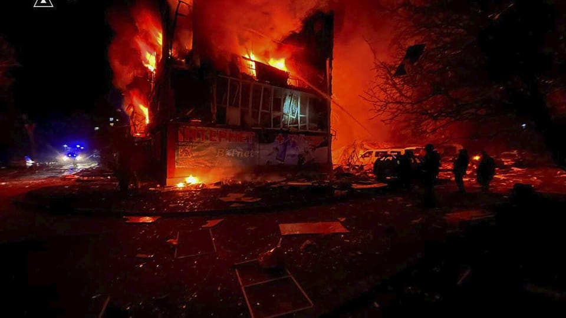

世界苦茶03月09日新闻 | 37条 | 马斯克据报与卢比奥严重争执

马斯克据报与卢比奥严重争执 | 伊朗拒绝美国谈判 | 大疆要求9点必须下班 | 加拿大英国与菲律宾开展合作 | 王毅“台湾省”表态再引台湾艺人接力转发
苦茶数据
美元兑人民币：7.24（昨日7.24，前日7.24）
美元兑日元：148.02（昨日147.51，前日149.26）
上证指数：休市（昨日3372，前日3375）
标普500指数：休市（昨日5770，前日5738）
比特币：86042（昨日86334，前日88100）
布伦特原油：70.36（昨日69.53，前日69.70）
中国新闻
• 中国农业部长表示，粮食安全靠科技 ：中国农业农村部部长韩俊在两会期间谈及粮食安全问题时说，解决吃饭问题的根本出路在科技，将加快农业科技关键核心技术攻关，加快实现高水平农业科技自立自强。综合澎湃新闻、央视新闻报道，今年的中国政府工作报告将粮食产量1.4万亿斤左右纳入主要预期目标，韩俊星期六在全国人大会议第二场“部长通道”集中采访活动中受访时说，最近三年，中国粮食产量平均达到1.39万亿斤，所以确定1.4万亿斤左右的目标经过了严格科学论证，经过努力可以实现。韩俊说，农业农村部门要抓好稳面积、增产量、提品质、强科技，严守耕地红线，坚决遏制耕地非农化，严格防止耕地非粮化。
• 王毅发言引“中国台湾省”话题热议 ：中国大陆外交部长王毅星期五就台湾主权归属问题表态后，“台湾唯一称谓就是中国台湾省”等话题登上微博热搜，多名台湾知名艺人转发央视发布的相关贴文。王毅星期五在全国人大会议外交主题记者会上说，“台湾地区在联合国的唯一称谓就是‘中国台湾省’”；台湾从来不是一个国家，过去不是，今后更绝无可能；鼓吹“台独”就是分裂国家，支持“台独”就是干涉中国内政，纵容“台独”就是破坏台海稳定。王毅表态后，“中国台湾省”“台湾唯一称谓就是中国台湾省”等话题迅速登上微博热搜。
• 北大扩招150人，聚焦国家战略领域 ：北京大学星期六发布消息，该校今年将增加150个本科招生名额，重点围绕国家战略急需、基础学科和新兴前沿领域，加大国家急需人才培养力度。根据新华社报道，新增招生计划将重点围绕国家战略急需、基础学科和新兴前沿领域，紧密结合学校规划发展方向，突出北大优势和北大特色，主要依托元培学院、信息科学技术学院、工学院以及临床医学专业进行培养。北京大学相关负责人说，近年来，学校全面落实立德树人根本任务，在总结元培学院办学经验的基础上，又调整组建了信息科学技术和工学两个本科生院，推动通识教育与专业教育深度融合，强化基础与深化交叉并举，全面提升拔尖创新人才自主培养质量，取得积极成效。
• 最高法表示，缅北电诈案涉案人数上升 ：中国最高法工作报告提到，严惩涉缅北等跨境电信网络诈骗犯罪，依法惩治侵犯公民个人隐私、偷拍窃听等违法犯罪。中国全国人大会议星期六在北京人民大会堂举行第二次全体会议，最高人民法院院长张军向大会作最高法工作报告。最高法报告说，去年审结电信网络诈骗案件4万件8.2万人，同比增长26.7%，依法严惩涉缅北等跨境电信网络诈骗犯罪。
• 台方称中国或在柬老打击台独 ：路透社星期五报道，由于中国大陆高官指示国安部门在海外打击台独支持者，台湾正在考虑提醒民众避免前往老挝和柬埔寨等与中国大陆有密切关系的国家，以免被波及。中国大陆去年6月21日发布《关于依法惩治台独顽固分子分裂国家、煽动分裂国家犯罪的意见》共22条，其中对犯分裂国家罪危害特别严重的，可判处死刑。据路透社和一名台湾高级安全官员查阅的一份台湾政府备忘录，中国大陆一名高级官员上月底在一场闭门会议中，指示国安部门在对中国大陆友好的国家执行上述指导方针。
• 最高法提及，2024年重大恶性案件上升 ：中国最高人民法院院长张军星期六在全国人大会议上作工作报告，提及2024年“一杀多”案件有明显增长，人民法院坚决依法严惩，以维护经济社会大局稳定。过去一年来，中国社会发生多起“献忠式”致命袭击事件，引发舆论恐慌。尤其在去年年末，中国在短短的十天内接连发生了至少三起针对公众的袭击事件，导致了至少43人死亡，超过60人受伤。11月11日晚间的广东省珠海市体育中心，62岁的樊维秋开车冲撞在内锻炼的市民，致死35人，致伤43人。 11月16日，江苏省无锡市的一所学校内，21岁的徐加金持刀捅人，导致8人死亡，17人受伤。11月19日，湖南省常德市的一所小学外也发生了一起汽车冲撞事件。
• 最高法报告提到，将严惩重大暴力犯罪 ：中国最高法工作报告中提到珠海撞人案和江苏无锡校园持刀杀人案，强调对挑战法律和道德底线的罪大恶极者，从严从重从快惩处。中国全国人大会议星期六在北京人民大会堂举行第二次全体会议，最高人民法院院长张军向大会作最高法工作报告。报告回顾2024年工作时提到，2024年审结故意杀人等严重暴力犯罪案件4.9万件5.8万人，件数同比下降5.8%，较10年前下降28.7%。
亚太印太新闻
• 台陆委会拟查台湾艺人涉陆言论 ：多名台湾艺人转发“中国台湾省”贴文，对此，台湾大陆委员会称，将依照两岸条例相关规范进行查处。台陆委会星期六发布新闻稿称，针对个别台湾艺人附和中共消灭“中华民国国家主权”，刻意转发中共官方相关贴文，委员会表示，“中华民国是主权独立的国家，台湾从来不是中华人民共和国的一部分，少数台湾演艺人员为求个人在陆发展利益，多次唱和中共官方损害我国家主权，严重伤害台湾民众情感。”陆委会称，中共长期以政治意识形态控制艺文影视环境，审查演艺人员相关言行，每逢特定时刻，就会动员台湾艺人政治表态，此种蛮横作法，凸显两岸体制根本差异。
• 国民党推公投案抗衡罢免劣势 ：台湾在野的国民党在大罢免行动中深陷劣势后，计划通过推动反废死等公投案激起民众对执政党的不满情绪。综合台湾《联合报》《自由时报》报道，民进党立院党团总召柯建铭向国民党发起大罢免行动后，国民党主席朱立伦也号召党内基层“以罢制罢”。但根据台湾中央选举委员会公布的首阶段审查结果，通过首阶门槛的蓝委与绿委罢免件数为32比零，让朱立伦等党中央高层饱受批评。《联合报》分析，如果大罢免行动失败，恐怕将成为朱立伦争取连任的一大阻力。 （翻评：病急乱投医。）
• 柯文哲获批3月10日返家奔丧 ：台湾在野的民众党前主席柯文哲在被关押期间父亲病逝，民众党主席黄国昌说，柯文哲返家奔丧的许可已获批准，但具体时间尚未确定。柯文哲因涉京华城容积案、政治献金案等被二度羁押禁见，目前被关押在台北看守所。他的父亲柯承发2月17日病逝，家属已确定在3月10日举办告别式。综合台湾《联合报》和中时新闻网报道，柯文哲的妻子陈佩琪星期五前往台北看守所探探视柯文哲，并提出申请，让柯文哲3月10日返家奔丧。
• 金正恩视察核动力潜艇建造项目 ：朝中社星期六报道，朝鲜领袖金正恩视察了核动力潜艇建造项目，并称大幅加强海军力量是平壤防御战略的重要组成部分。报道说，金正恩参观了专门建造军舰的造船厂，但未透露视察的具体日期和地点。金正恩强调，加强海军战力的基本方向是同步推进水上水下舰艇的现代化程度，进一步提高作战能力。
• 英外相访菲，强调维护国际秩序 ：英国外交大臣戴维·拉米星期六表示，英国和菲律宾承诺维护基于规则的国际秩序。拉米是在对菲律宾进行正式访问时作上述表示的。他还指出，英国和菲律宾在支持乌克兰和推进一个自由开放的印太地区方面也坚定站在一起。“今天，在全球许多动荡之中，我们为我们的关系制定一条新的航程，而且我们必须与像菲律宾这样理念相同的伙伴加强关系，”拉米在马尼拉与菲律宾外长恩里克·马纳罗举行的一场联合记者会上表示。
• 缅甸军政府称最早12月举行选举 ：缅甸军政府领导人表示，缅甸将在今年12月或明年1月举行选举。这是自2021年缅甸军方发动政变以来，首次提供了将进行选举的具体时间表。“我们计划在2025年12月或...2026年1月举行选举，”缅甸国营报纸《缅甸环球新光报》星期六刊出的报道援引军政府领导人敏昂莱表示。据报道，敏昂莱是在星期五对白俄罗斯进行国事访问期间，宣布了该时间表。他并表示：军政府计划尽快举行一场“自由和公正的”选举，“53个政党已经提交了参加选举的名单”。 （翻评：怎么可能？而且最荒唐的是敏昂莱这两天在白俄罗斯，邀请白俄罗斯派遣观察员来保证选举是公证的。不如直接让委内瑞拉派人来组织选举好了。）
• 加拿大和菲律宾将签署一项重要防御协议，以加强战斗演习和军事关系： 马尼拉国防部周五表示，加拿大和菲律宾都强烈批评中国在有争议的南海日益咄咄逼人的行动。两国已就一项重要防御协议达成谈判，该协议将允许两国军队举行联合战斗演习并加强防御交战。加拿大和其他西方国家一直在加强其在印度太平洋地区的军事存在，以帮助促进法治并扩大该地区的贸易和投资。这与菲律宾总统费迪南德·马科斯领导下扩大与友好国家的防御关系以加强该国防御的努力相吻合，因为菲律宾在有争议的南海面临着日益强硬的中国。 （翻评：这可能是中国对加拿大开打贸易战的直接原因。）
科技新闻
• 微软研发AI模型挑战OpenAI ：人工智能领域的竞争白热化，据传微软正在开发自家的人工智能推理模型，力求在这个领域分一杯羹。彭博社引述知情人士说，微软研发的人工智能模型得出的测试结果显示，这款模型能够跟OpenAI和Anthropic在内的竞争对手一较高低。针对这项报道，微软发言人回答彭博社的询问时指出，公司正在混合使用各种模型，包括来自微软AI和开源社区的模型，以及与OpenAI深化合作。
• 北京将推中小学AI通识教育 ：中国首都北京市将从今年秋季学期开始，在全市中小学开展人工智能通识教育。据“首都教育”微信公号星期六消息，北京市教委印发《北京市推进中小学人工智能教育工作方案（2025—2027年）》，公布上述计划。方案要求，落实国家课程方案和课程标准要求，开齐开足人工智能教育相关课程。探索设置中小学人工智能教育地方课程，研制《北京市中小学人工智能教育地方课程纲要（试行）》，鼓励各区和中小学校探索建设具有地域特色和学校特点的人工智能教育拓展课程。
财经新闻
• 欧尔班表示，匈美经济协议或抵美关税 ：匈牙利总理欧尔班星期六说，匈牙利和美国将就一项经济合作方案达成一致，这将有助于匈牙利经济，并可能抵消美国可能征收关税的影响。欧尔班是美国总统特朗普的长期支持者。他表示，这项经济方案将扩大匈牙利和美国之间现有的政治联盟。欧尔班更说，即使美国和欧盟爆发贸易战，这样的经济协议也会对匈牙利有所帮助。欧尔班当天在匈牙利工商会年度会议上表示，一旦向欧盟征收关税，“匈牙利将像所有欧盟成员国一样在贸易战中遭受损失。我们还不知道损失的程度，但可以肯定的是，损失会发生。”
• 中国科技股市值增长4390亿美元 ：中国科技股今年已飙升4390亿美元，这股强劲反弹使曾经无可匹敌的美国科技股相形见绌。彭博社星期五报道，法国兴业银行2月28日基于市值和成长轨迹，将阿里巴巴、腾讯、小米、比亚迪、中芯国际、京东和网易等七家中国科技巨头称为“七大巨头”。由这七家科技巨头组成的一揽子股票，今年已上涨超过40%。
• 中国对加拿大启动反歧视调查 ：中国商务部星期六对加拿大对华相关限制性措施发起的首例反歧视调查作出裁定公告，决定将对加拿大采取反歧视措施。中国机电商会和中国机电产品进出口商会同日表态支持。中国机电商会发布声明说，商会自立案以来高度关注调查进展，坚决支持中国商务部依法依规调查所做出的公正裁决，采取必要措施，维护国际经贸秩序，坚决捍卫中国企业合法权益。声明说，自去年八月以来，加方罔顾各方提醒与劝阻，执意决定对进口自中国的相关产品采取歧视性的单边限制措施，严重阻碍中加两国企业正常经贸合作，损害中国行业企业的正当权益，破坏国际经贸规则和秩序，对全球贸易与经济发展的安全稳定造成负面影响。
• 加财政部长称准备与美制定反倾销措施 ：加拿大财政部长勒布朗说，加拿大准备与美国合作制定新措施，防止中国商品倾销北美市场。据彭博社星期六报道，勒布朗受访时说，如果美国特朗普政府想开始评估北美自由贸易协定，加拿大已经准备好启动早期谈判。他说，渥太华更倾向于尽快开展更广泛的谈判，以解决多个贸易摩问题，而不是“一个部门一个部门地谈、一周一周地谈”。
• 美或对中国传统半导体征收更多关税 ：美国贸易代表办公室将于下星期二就中国制造的传统半导体举行听证会，此举可能导致美国对来自中国的晶片征收更多关税，这些晶片为汽车、洗衣机和电信设备等日常用品提供动力。据路透社报道，上述相关调查始于去年12月，由时任美国总统拜登启动，旨在保护美国和其他半导体生产商免受中国大规模增加的晶片供应影响。美国从今年1月1日起对中国半导体征收50%的关税。传统晶片使用的是十多年前推出的旧制造工艺，通常比人工智能应用程序或复杂微处理器中使用的晶片简单得多。
• 无人机龙头企业大疆严禁加班9点必须走人： 无人机龙头企业大疆创新 “不准加班” 运动从上月27日开始，已实行一周有余。深圳总部实行赶人策略，一到晚上九点，主管和HR分三轮赶人下班，禁止员工加班；上海区域更直截了当，办公楼到晚上九点准时关灯。大疆深圳总部技术部门员工透露，主管此前在部门组会上提出，为了大家的健康着想，不提倡过度加班，没有必须完成的任务那就早点下班回家，必须九点下班。若按早上九点到十点半上班、晚上九点下班，中间减去午休1.5小时和晚餐1小时，大疆员工每天的工作时长约八至九个半小时。有传闻猜测，大疆强制九点下班或与欧盟、美国相关法案有关，但目前未有官方或员工予以证实。
俄乌战争
• 泽连斯基称乌美将在沙特对话 ：乌克兰总统泽连斯基星期六说，乌克兰“完全致力于”下周与美国代表在沙特阿拉伯进行建设性对话，并希望就必要的决定和步骤达成一致。泽连斯基在X平台发文说：“从这场战争爆发的第一秒开始，乌克兰就一直在寻求和平。我们已提出了切实可行的建议。关键是要迅速有效地采取行动。”泽连斯基强调：“我们完全致力于进行建设性的对话，我们希望进行讨论，并就必要的决定和步骤达成一致。”
• 泽连斯基呼吁对俄实施更多制裁 ：乌克兰总统泽连斯基星期六呼吁对俄罗斯实施更多制裁。在美国与乌克兰就停战举行会谈前几天，俄罗斯军队星期五袭击乌克兰，造成至少14人死亡，数十人受伤。根据乌克兰官方消息，俄军周五晚间对乌东顿涅茨克地区的多布罗皮利亚市中心发动袭击，造成11人死亡，30人受伤。
• 俄称夺回库尔斯克边境三村庄 ：俄罗斯星期六说，俄军已夺回乌克兰在库尔斯克边境地区占领的三个村庄。乌克兰士兵去年夏天在库尔斯克发动了攻势，但俄罗斯已夺回了乌克兰占领的三分之二以上的领土。最近，乌军在库尔斯克面对俄军的猛烈攻势，已经节节败退。根据与乌军有联系的战争分析网站DeepState透露，在苏贾镇附近的乌克兰部队被“突破”之后，俄军随即发动了攻势。DeepState说：“我们的一支部队离开了阵地。此后，敌人增援部队并发动了攻击……这就是结果。”这个网站在社交媒体Telegram 有超过80万订阅户。
• 俄罗斯3月7日晚至3月8日对乌克兰顿涅茨克、哈尔科夫等地发动猛烈袭击，造成至少22人死亡、47人受伤： 波兰总理图斯克批评对俄罗斯的绥靖政策，称“当有人安抚野蛮人时”，就会有“更多的炸弹、更多的侵略、更多的受害者”。俄罗斯高级指挥官和军事博主表示，俄军已发动大规模攻势，从乌军手中夺回库尔斯克西部大片土地。俄军似乎正在摧毁库尔斯克与边境线之间的桥梁，可能是为了防止乌军撤退回乌克兰。乌军没有立即置评。 （翻评：川普总统高超的施压和谈策略，造成的结果就是俄罗斯取得战场优势快速进攻。）
• 乌克兰钢铁产量增长9.9% ：尽管乌克兰已丧失东部城市波克罗夫斯克的主要焦煤矿，但2025年首两个月的钢铁产量仍然保持增长。乌克兰钢铁生产商联盟周六公布的数据显示，今年1月至2月，乌克兰的原钢产量增长了9.9%，达到118万吨。由于俄罗斯军队推进，安全局势恶化，乌克兰钢铁制造商Metinvest已暂停乌克兰唯一焦煤矿的运营。焦煤矿是钢铁生产的成分之一。
• 特朗普顾问考虑调整对俄制裁 ：据知情人士透露，美国总统特朗普的顾问们正在研究，若与俄罗斯就结束乌克兰战争的谈判取得进展，则可以取消或调整对俄制裁措施，包括石油价格上限。彭博社引述因讨论未公开信息而要求匿名的知情人士说，此举可能标志着华盛顿与伦敦和布鲁塞尔的盟友再次出现巨大政策分歧。这些国家的官员已表示，不会过早解除在俄罗斯全面入侵后施加的制裁。知情人士称，美国放松对俄罗斯部分限制的前景并不妨碍华盛顿通过其他措施对莫斯科施加压力。特朗普星期五说，他“正在认真考虑”对莫斯科实施新的银行制裁和关税。
其他新闻
• 以人质促内坦亚胡全面执行停火 ：已获释的50多名以色列人质星期五促请以色列总理内坦亚胡全面执行加沙停火协议，确保仍遭扣押的人质能够安全返回家园。在以哈第一阶段停火协议获得释放的56名以色列人质周五傍晚在社媒平台Instagram发表的一封公开信中说：“我们这些经历过地狱般折磨的人清楚知道，如果重新开战，留下来的人可能性命不保。”他们促请内坦亚胡政府“一次性”全面履行停火协议。在这封公开信上签字的人质当中，包括妻儿在加沙被囚禁期间死亡的比巴斯。
• 哈梅内伊拒绝美方施压谈判 ：伊朗最高领袖哈梅内伊称不会在“恃强凌弱的政府”施压下谈判，白宫对此重申美国总统特朗普的立场，即可以通过军事或达成协议的方式与伊朗打交道。路透社报道，特朗普此前致信哈梅内伊，要求伊朗就放弃开发核武器展开新一轮谈判，否则美国可能会采取军事行动。不过，哈梅内伊星期六会见伊朗官员时说：“一些恃强凌弱的国家坚持要谈判不是为了解决问题，而是要主宰并强加他们的意愿。”哈梅内伊称，谈判只是对方提出新要求的途径，不只涉及伊核问题。“德黑兰绝不接受他们的要求。”
• 欧英法意支持530亿美元加沙重建 ：法国、德国、意大利和英国的外交部长星期六表示，他们支持阿拉伯国家提出的加沙重建计划。这个计划将投入530亿美元重建加沙，避免巴勒斯坦人离开加沙。四国外长发表联合声明说：“此计划展示了重建加沙的现实道路，并承诺一旦实施将迅速、可持续地改善居住在加沙的巴勒斯坦人的灾难性生活条件。”由埃及起草的加沙重建计划，本月4日获得阿拉伯国家领导人的支持并且通过，但遭到美国总统特朗普的反对。 （翻评：乌克兰一年需要350亿美元，真有这么多钱先给乌克兰吧。）
• 特朗普称贸易争端不影响美加墨世界杯 ：美国、加拿大和墨西哥将于2026年合办世界杯足球赛，美国总统特朗普星期五宣布成立协助筹办赛事的白宫工作小组时指出，美加墨之间的贸易紧张关系不会影响赛事，反而会让比赛更刺激。特朗普星期五与国际足联主席因凡蒂诺在椭圆形办公室对记者发表讲话时，针对美国与联合主办2026年世界杯的邻国发生贸易争端，可能影响赛事的说法丝毫不以为意。他在签署行政命令，正式成立协办世界杯的工作小组后说：“我认为这会让比赛更刺激……紧张是好事，这会让比赛更有看头。”
• 马斯克与国务卿因裁员问题争执 ：《纽约时报》报道，负责美国政府效率部的马斯克因国务院未按计划裁员，在星期四内阁会议上与国务卿鲁比奥起争执。不过，特朗普受询时否认两人吵架。《纽约时报》的报道指出，马斯克嘲讽鲁比奥的国务院削减开支纪录，指责他在政府上任的前45天内“一个人都没解雇”。不过鲁比奥提醒他，国务院有超过1500名员工接受提早退休，并嘲讽马斯克是否要把这些人找回来再裁一次。
• 美共和党公布新预算，或引党派对立 ：众议院共和党人星期六(公布了一项开支议案，在9月30日前为联邦机构提供资助，推行单独行动战略，似乎肯定会引发与民主党在政府开支范围上的重大对抗。这份99页的议案将略微提振国防开支计划，同时将非国防开支计划削减到低于2024预算年度的水平。这对大多数民主党人来说可能行不通，他们一直长期坚持国防和非国防开支应朝同一方向发展。国会必须在星期五午夜之前行动，以避免政府部分关门。
• 叙利亚冲突升级，已致600多人死亡 ：一个战争监督组织星期六说，安全部队与叙利亚被推翻总统巴沙尔·阿萨德的支持者之间的两天冲突以及随后的报复杀戮已造成600多人死亡，是叙利亚冲突14年前开始以来最致命的暴力行为之一。星期四爆发的冲突显示大马士革新政府面临的挑战大幅升级。反叛分子三个月前推翻了阿萨德，夺取了政权。政府说这是对阿萨德残余势力攻击的回应，并说“个人行为”造成猖獗的暴力。
• 美南卡州15年来首次行刑队执行死刑 ：美国南卡罗莱纳州星期五以行刑队枪决的方式结束了一名死刑犯的生命，这是美国15年以来首次以这种方式处决死刑犯。现年67岁的死刑犯布拉德·西格蒙自愿接受行刑队处死，声称他担心电椅或注射处死方式会加长他的死亡过程和痛苦。南卡州惩教署发言人克里斯蒂·希音表示，西格蒙在美东时间星期五晚6:08被正式宣布死亡。
• 格陵兰议会大选，独立议题受关注 ：格陵兰3月11日将举行议会大选投票，独立议题成为此次竞选活动的焦点；大部分政党都支持独立，主要关注的是何时、而非是否将切断与丹麦的联系，且不落入美国控制。在格陵兰岛5.7万名居民中，许多人坚决主张他们既不想成为美国人也不想成为丹麦人，只想成为格陵兰人。美国总统唐纳德·特朗普屡次发表拿下格陵兰的言论，为这个自治领土的独立运动注入了新动力。